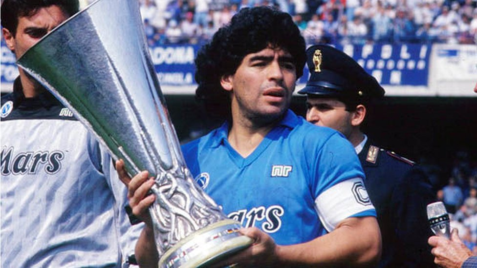
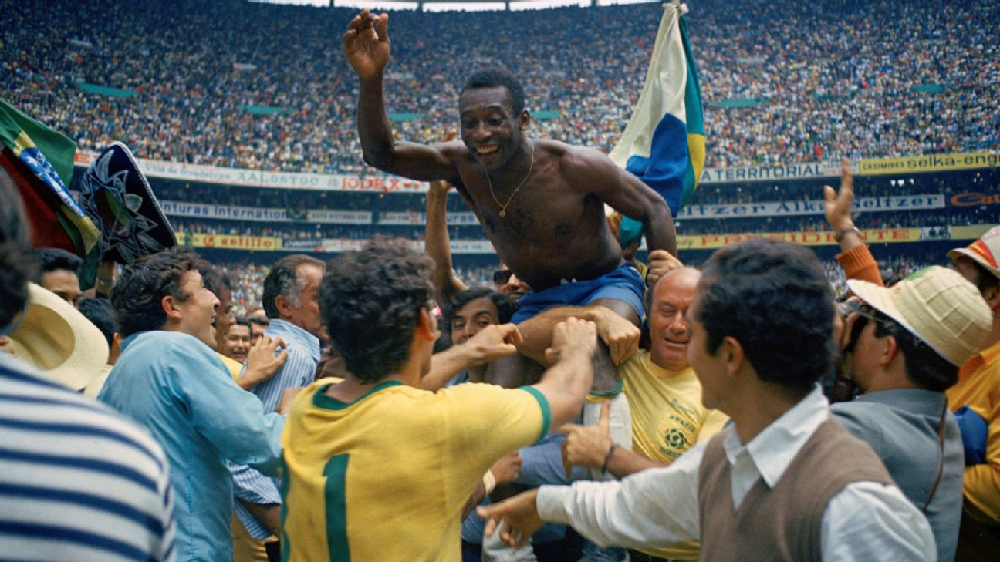
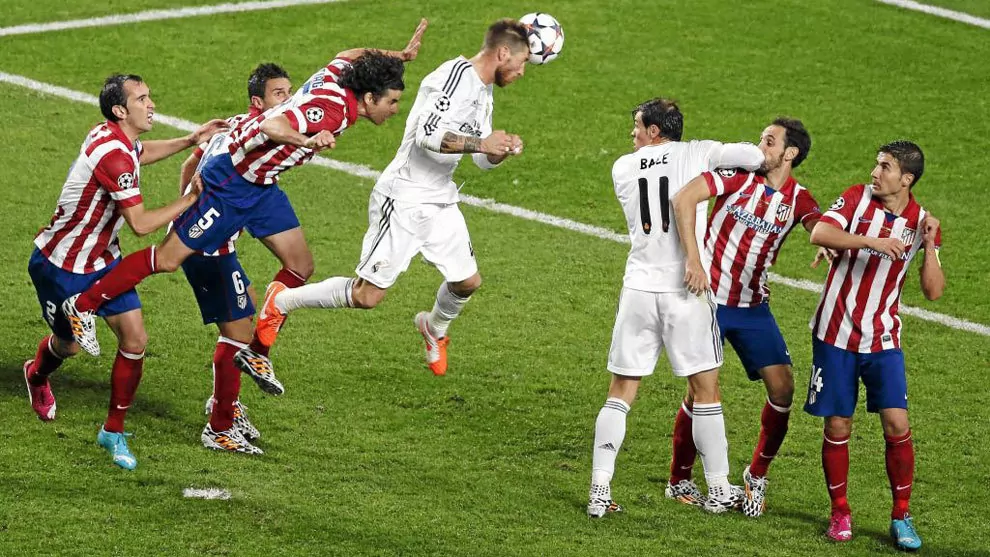
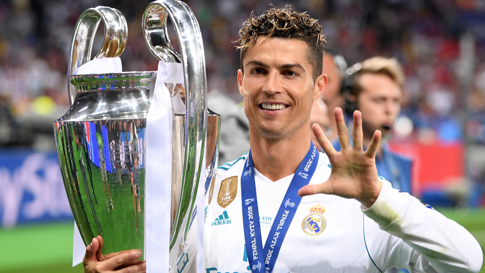

Grandes Leyendas
En esta sección, rendimos homenaje a las figuras más icónicas de la historia del fútbol: jugadores que dejaron huella no solo por sus logros y talento, sino también por su impacto cultural, su legado y la inspiración que brindaron a generaciones enteras.
Aquí encontrarás breves biografías de leyendas de distintas épocas y estilos, cada una con una historia única e irrepetible.
Grandes Leyendas
El orden de aparición no responde a jerarquías ni comparaciones; todos tienen su lugar especial en la historia del balompié.
Además, te presentamos frases memorables que han quedado inmortalizadas en la historia del deporte y una galería visual que te permitirá revivir momentos históricos de estos íconos del fútbol mundial.Biografías
Biografías
Lionel Messi (1987, Argentina)
Lionel Andrés Messi Cuccittini no solo ha redefinido el concepto de genialidad en el fútbol moderno, sino que ha mantenido un nivel de excelencia durante más de dos décadas. Formado en La Masía del FC Barcelona, debutó profesionalmente en 2004 y rápidamente se convirtió en el eje del equipo catalán. Con el Barça conquistó 10 Ligas, 4 Champions League y se convirtió en el máximo goleador histórico del club.
Messi también tuvo una travesía compleja con la selección argentina: duramente criticado por años, logró revertir su historia al ganar la Copa América 2021, la Finalissima 2022 y coronarse campeón del mundo en Qatar 2022. Su estilo de juego combina visión, regate, asistencia y definición con una inteligencia táctica pocas veces vista. Más allá de sus 8 Balones de Oro, Messi representa un símbolo de perseverancia y fidelidad al juego.

Cristiano Ronaldo (1985, Portugal)
Cristiano Ronaldo dos Santos Aveiro es el prototipo del atleta moderno: físico privilegiado, mentalidad competitiva y una ética de trabajo extraordinaria. Inició su carrera en el Sporting de Lisboa y saltó a la fama mundial en el Manchester United. En el Real Madrid vivió su etapa más gloriosa, ganando 4 Champions League, convirtiéndose en el máximo goleador del club y marcando una rivalidad histórica con Messi.
Con Portugal ganó la Eurocopa 2016 y la Nations League 2019, siendo líder, goleador e inspiración. Con más de 850 goles en su carrera, es uno de los máximos anotadores de todos los tiempos. Fuera del campo, es una figura global de marketing y ejemplo de profesionalismo. Su legado es el de un hombre que convirtió el sacrificio en arte.
Pelé (1940–2022, Brasil)
Edson Arantes do Nascimento, conocido mundialmente como Pelé, es la figura que elevó al fútbol a una categoría mítica. Su talento innato, velocidad mental y corporal, y una asombrosa capacidad goleadora —más de 1,200 goles en su carrera— lo llevaron a conquistar tres Copas del Mundo (1958, 1962, 1970), hazaña nunca igualada.
Fue el eje de un Brasil alegre, técnico y ofensivo. En el Santos FC logró títulos nacionales e internacionales, convirtiéndose en un ícono global. Pelé también fue el primer futbolista moderno en entender su papel como embajador deportivo, participando en campañas sociales y diplomáticas. Su influencia trascendió el campo de juego, convirtiéndose en una figura de unidad nacional y orgullo brasileño.

Diego Maradona (1960–2020, Argentina)
Pocas figuras han tenido una relación tan intensa con el fútbol como Diego Armando Maradona. Dueño de una zurda prodigiosa y una creatividad desbordante, Maradona encarnó el fútbol de barrio elevado a la categoría de arte.
Lideró a Argentina a la gloria en el Mundial de 1986, donde marcó el "Gol del Siglo" y la famosa "Mano de Dios". En Europa, llevó al Napoli a conquistar sus únicos títulos de Serie A, convirtiéndose en una figura casi religiosa en el sur de Italia.
Su vida fue una constante montaña rusa entre la gloria y la controversia, pero nunca perdió su conexión con el pueblo. Maradona fue más que un jugador: fue un símbolo de lucha, pasión e irreverencia.

Johan Cruyff (1947–2016, Países Bajos)
Johan Cruyff no solo fue un extraordinario jugador, sino un pensador del fútbol. Lideró al Ajax de Ámsterdam a una época dorada en los años 70, ganando tres Copas de Europa consecutivas. Con la selección neerlandesa, fue el arquitecto del “Fútbol Total”, un estilo revolucionario donde todos atacaban y defendían, basado en el movimiento constante y la inteligencia táctica.
En el FC Barcelona, tanto como jugador como entrenador, dejó una huella imborrable. Implantó una filosofía de juego que sigue vigente en la cantera y en el estilo del club. Su legado va más allá de los títulos: cambió la forma de entender el fútbol, con una visión basada en el espacio, la técnica y la libertad creativa.

Ronaldo Nazário (1976, Brasil)
Ronaldo Luís Nazário de Lima, “El Fenómeno”, maravilló al mundo con su mezcla letal de velocidad, dribbling y definición. A los 17 años ya era campeón del mundo y a los 21 había jugado en el PSV, Barcelona e Inter. Las lesiones lo alejaron de su plenitud, pero regresó para conquistar el Mundial de 2002 como máximo goleador.
En el Real Madrid fue pieza clave de los “Galácticos”, y su popularidad trascendió el fútbol. Su carrera estuvo marcada por contrastes entre el fulgor y el dolor, pero nadie duda que fue uno de los delanteros más temidos de la historia. Fue el primer delantero moderno: potente, técnico y carismático.
Zinedine Zidane (1972, Francia)
Zidane es sinónimo de elegancia. Su estilo pausado pero determinante, su control orientado y su visión de juego lo colocaron como uno de los grandes cerebros del fútbol. Fue el artífice del título mundial de Francia en 1998, marcando dos goles en la final. En clubes como la Juventus y el Real Madrid impuso su calidad y liderazgo.
Su gol de volea en la final de Champions 2002 es uno de los más bellos de la historia. Tras su retiro, se convirtió en un exitoso entrenador, ganando tres Champions consecutivas con el Real Madrid. Su figura representa la mezcla perfecta entre talento natural, templanza emocional y capacidad de liderazgo.
Franz Beckenbauer (1945–2024, Alemania)
“El Káiser” Beckenbauer fue el defensor más influyente del siglo XX. Inventó el rol de líbero moderno, con capacidad para salir jugando desde el fondo con elegancia y precisión. Capitán de la Alemania Federal campeona del mundo en 1974, también lo logró como entrenador en 1990, un hecho que pocos han conseguido.
Con el Bayern Múnich ganó tres Copas de Europa consecutivas, y su impacto traspasó el césped: fue dirigente, embajador y visionario. Fue una figura respetada, diplomática, siempre ligada al crecimiento estructural y competitivo del fútbol alemán.

Ferenc Puskás (1927–2006, Hungría / España)
Ferenc Puskás fue un símbolo del fútbol húngaro de los años 50, época en la que Hungría maravilló al mundo con su selección conocida como “Los Magiares Mágicos”. Goleador de técnica depurada y formidable zurda, lideró a su selección hasta la final del Mundial 1954.
Tras emigrar por razones políticas, se unió al Real Madrid, donde ganó varias Ligas y tres Copas de Europa, formando una dupla histórica con Di Stéfano. Su legado como artillero es tal que la FIFA bautizó el Premio Puskás al mejor gol del año en su honor.
Alfredo Di Stéfano (1926–2014, Argentina / España)
Di Stéfano fue un futbolista total, capaz de jugar en cualquier posición del campo con inteligencia y eficacia. Nacido en Argentina, también jugó para Colombia y España, reflejo de una época con menos rigidez en las selecciones.
Lideró al Real Madrid en su época más dorada, conquistando cinco Copas de Europa consecutivas. Su capacidad de sacrificio, lectura de juego y versatilidad lo hicieron único. Fue un pionero del fútbol moderno, capaz de dominar el ritmo del juego como nadie en su época.
Frases célebres
Frases célebres
Galería Multimedia
Galería Multimedia








